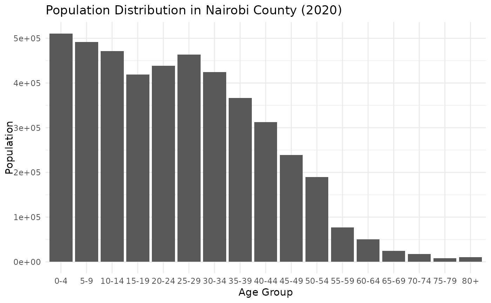

Base and Projected Age Distributions in Kenya (2020-2035, Annual Increments)
Source:R/pop1.R
pop1.RdThis dataset provides base and projected population distributions by county, age group, gender, and year for Kenya from 2020 to 2035 in annual increments. It includes population estimates derived from the 2019 Kenya Population and Housing Census and subsequent projections by the Kenya National Bureau of Statistics (KNBS).
Format
A data frame with 41,424 rows and 5 variables:
- county
Name of the county in Kenya
- age
Age group in 5-year intervals (e.g., "0-4", "5-9", ..., "80+")
- year
Year of the population estimate
- gender
Gender category ("Male", "Female", or "Total")
- pop
Estimated population count for the specified county, age group, gender, and year
Source
Kenya National Bureau of Statistics (2023). 2019 Kenya Population and Housing Census Analytical Report on Population Projections. Retrieved from knbs.or.ke.
Details
The pop1 dataset can be used to analyse demographic trends, plan resource allocation,
and study population dynamics in Kenya over the specified years. The projections
take into account factors such as fertility rates, mortality rates, and migration
patterns. The age groups are provided in 5-year intervals, and the population
estimates are updated annually from 2020 to 2035.
Note:
The "Total" gender category represents the combined population of both males and females.
The "All Ages" age category represents the combined ages of all age groups.
Examples
data(pop1)
head(pop1)
#> # A tibble: 6 × 5
#> county age year gender pop
#> <fct> <fct> <int> <fct> <dbl>
#> 1 Kenya 0-4 2020 Male 3123737
#> 2 Kenya 0-4 2020 Female 3156282
#> 3 Kenya 0-4 2020 Total 6280019
#> 4 Kenya 0-4 2021 Male 3143314
#> 5 Kenya 0-4 2021 Female 3147353
#> 6 Kenya 0-4 2021 Total 6290667
summary(pop1)
#> county age year gender
#> Baringo : 864 5-9 : 2304 Min. :2020 Female:13808
#> Bomet : 864 10-14 : 2304 1st Qu.:2024 Male :13808
#> Bungoma : 864 15-19 : 2304 Median :2028 Total :13808
#> Busia : 864 20-24 : 2304 Mean :2028
#> Elgeyo-Marakwet: 864 25-29 : 2304 3rd Qu.:2031
#> Embu : 864 30-34 : 2304 Max. :2035
#> (Other) :36240 (Other):27600
#> pop
#> Min. : 386
#> 1st Qu.: 10984
#> Median : 32576
#> Mean : 171194
#> 3rd Qu.: 73208
#> Max. :62164808
#>
# Example: Plotting the population distribution for Nairobi County in 2020
library(ggplot2)
library(dplyr)
kenya_2020 <- pop1 %>%
filter(county == "Nairobi City", year == 2020, gender == "Total", age != 'All Ages')
ggplot(kenya_2020, aes(x = age, y = pop)) +
geom_bar(stat = "identity") +
labs(
title = "Population Distribution in Nairobi County (2020)",
x = "Age Group",
y = "Population"
) +
theme_minimal()
